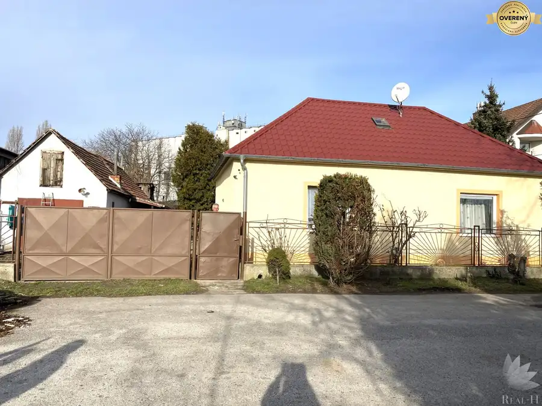
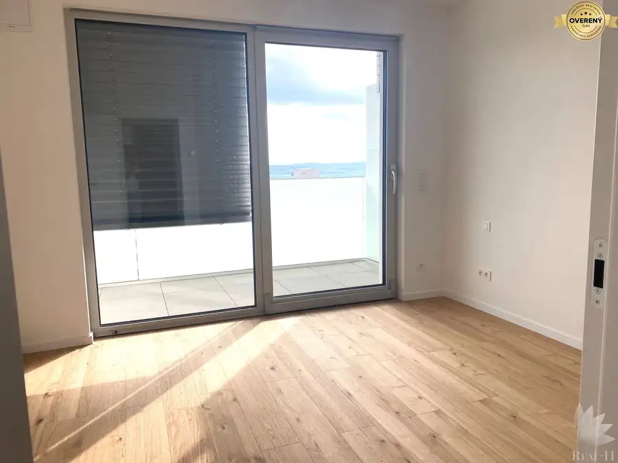
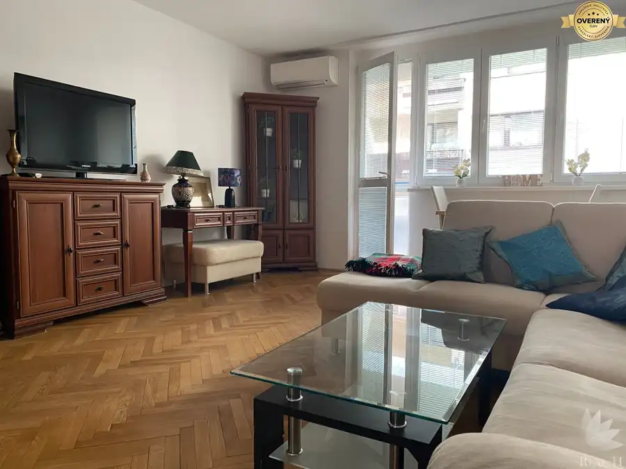

NA PRENÁJOM 3-izbový byt 74 m² + balkón, Sklenárova, Ružinov BA II
Ružinov, Bratislava
- Dispozícia3-izbový
- Plocha74 m²
- Poschodie3. z 6
- Stavpo rekonštrukcii
- Vlastníctvoosobné
- Energetická triedaA
O nehnuteľnosti
Real-H ponúka na prenájom krásny, dizajnový, kompletne prerobený 3-izbový byt na Sklenárovej ulici v obľúbenej lokalite Bratislava II – Ružinov, Nivy. Kompletne prerobený a zariadený – VOĽNÝ IHNEĎ
*ZÁKLADNÉ INFO:*
Výmera: 74 m² + balkón 4 m² z obývacej izby
Podlažie: 3. poschodie / 6, nový bezbariérový výťah
Orientácia: východná
Stav: po kompletnej rekonštrukcii, kompletne zariadený
Voľný: IHNEĎ
Podmienka: nefajčiari
*DISPOZÍCIA:*
Vzdušný otvorený priestor obývačky s jedálenskou časťou a vstupom na balkón, samostatná kuchyňa s kuchynskou linkou na mieru, vstupná predsieň s vešiakom a botníkom, chodba s veľkými šatníkovými skriňami, 2 samostatné izby (spálňa, detská izba / pracovňa), kúpeľňa so sprchovacím kútom a umývadlom so skrinkou, samostatné WC, chodbička s práčkou a úložnou skrinkou.
*VYBAVENIE KUCHYNE:*
Chladnička s mrazničkou, indukčná varná doska, elektrická rúra, umývačka riadu, digestor.
*BONUS:*
Byt disponuje množstvom úložného priestoru. Možnosť dovybavenia izby podľa požiadaviek klienta.
*LOKALITA – Nivy / Ružinov:*
Veľmi žiadaná lokalita s množstvom zelene, parkov, jazier a športovísk. 100 m od domu OC Astra, poliklinika, nemocnica, kúpalisko Delfín, trhovisko Miletičová. Priamo pri dome škola a škôlky. Výborné napojenie na Ružinovskú, Gagarinovu a Bajkalskú s napojením na diaľničný obchvat. Centrum 5 minút autom, MHD 50 m od domu.
*CENA:*
900€ / mesiac + 300€ energie (bez internetu – hradí si nájomník)
*Platby pri podpise:*
1x nájom 900€ + energie 300€ + depozit 1.000€ + provízia RK 600€
*KONTAKT:*
Real-H, s.r.o.
Hana Bačiková –
http://www.realh.sk
Parametre
| Celková rozloha | 74 m² |
|---|---|
| Úžitková plocha | 74 m² |
| Poschodie | 3/vyššie poschodie |
| Počet poschodí | 6 |
| Počet izieb | 3 |
| Vlastníctvo | osobné |
| Stav | po rekonštrukcii |
| Odvoz odpadu | áno - separovaný |
| Plyn | nie |
| Internet | optika |
| Kúpeľňa | sprchovací kút |
| Vykurovanie | spoločné |
| Balkón | áno - 1 |
| Lódžia | nie |
| Terasa | nie |
| Pivnica | áno |
| Garáž | nie |
| Výťah | áno |
| Parkovanie | verejné |
| Postavené z | panel |
| Zariadenie | zariadený |
| Zateplený objekt | áno |
| Krb | nie |
| Klimatizácia | nie |
| Káblová televízia | áno |
| Energetický certifikát | A |
| Predzáhradka | nie |
| Bezbariérový prístup | áno |
| Okná | plastové |
| Orientácia | východná |
| Dátum zverejnenia | 18. 9. 2026 |
Kde to je
Mohlo by Vás zaujímať

Rodinné domy7 168 000 €Real - H,s.r.o. ponúka na predaj rodinný dom Dunajská Streda Dunajská Streda 3-izbový120 m² Real – H, s.r.o. ponúka na predaj tehlový rodinný dom, nachádzajúci sa v centre Dunajskej Stredy, ulica Nová osada. Samostatne stojaci ,…
Nebytové priestory10 1 500 €Prenájom kancelárskych priestorov + garáž REZIDENCIA DROTÁRSKA Staré Mesto, Bratislava 3-izbový68 m²5. podlažie Real – H, ponúka prenájom kancelárskych priestorov, len pre platiteľov DPH, v novostavbe DROTÁRSKA 15 BA I – Staré Mesto , 5 minút peši do…
Byt10 397 900 €Real-H ponúka predaj 3 izbového bytu BA I Staré Mesto Medená ulica Staré Mesto, Bratislava 3-izbový75 m²3. podlažie Snívate o bývaní v Starom meste s nádychom histórie a atmosféry ? Predstavujeme Vám jedinečnú ponuku predaja 3 izbového bytu v úplnom centre…